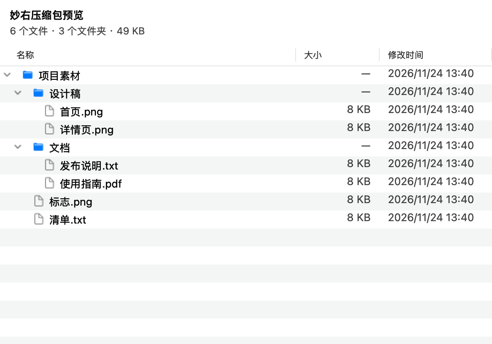

Everyday actions, right in the context menu.
MiaoRight puts Copy Path, Open With, Open in Terminal, and Cut & Paste in Finder's context menu, and gives your Mac a clipboard history and an encrypted vault that are always one keystroke away.
Look inside an archive without leaving Finder.
Select a ZIP, 7Z, or RAR in Finder, press Space or open the preview pane, and see the archive's folder tree in Quick Look. Names, sizes, and modification dates are visible at a glance; very large or restricted archives may show only part of the contents.

Everything you copied, ready to come back.
Press ⇧⌘V to open the panel. Text, images, and files are there. Search instantly, keep favorites out of cleanup, and paste with one selection.
Lock sensitive files in the vault.
Move files in from the context menu and keep them in an AES-256 encrypted disk image. Locking unmounts it, so even filenames disappear. The vault locks when idle, when the Mac sleeps, or when MiaoRight quits.
Compress, rename, and extract with a confirmation first.
Choose a format and password when compressing, compare old and new names before renaming, and let extraction detect formats and split archives.
For macOS 14 and later. Native Swift and SwiftUI, with English and Simplified Chinese interfaces.